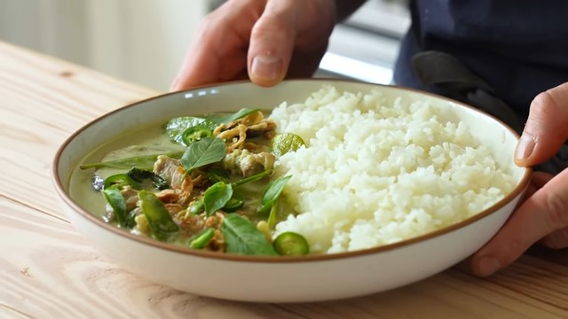

Thai Green Curry

Description:
A common curry dish originating from Thailand. Green curry can actually be considered a category of curries. Alternately called Kaeng Khiao Wan (native name)
Ingredients:
Green Curry Paste:
- 2 teaspoons (4g) coriander seeds
- 1 teaspoon (2g) cumin seeds
- 1 teaspoon (3g) white peppercorn
- 3 serranos, thinly sliced
- 9 Thai chilies, thinly sliced
- 2 small shallots, finely chopped
- 1 lemongrass stalk, rough chopped
- 2-inch Galangal, finely chopped
- 3 kaffir lime leaves, chiffonade
- 7 cloves garlic
- 4 springs cilantro stems
- zest of 1 lime
- 1/2 teaspoon (4g) dried Thai shrimp paste
Curry:
- 2 tablesppons (28g) oil
- green curry paste
- 5 cloves garlic, finely chopped
- 3/4 cup (177ml) chicken stock
- 13.50z (400ml) full fat coconut milk
- 2 tablespoons (30ml) fish sauce
- 1 tablespoon (17g) palm sugar
- 3 kaffir lime leaves
- 3/4 lb. (340g) chicken thigh, 1" cubes
- 1.5 cups (160g) snow peas
- 1/2 bunch Thai basil leaves
- 2 Thai eggplants, slice 1/2
- juice of 1 lime
- steamed rice, for serving
- fried shallots, for garnish
- Thai basil, for garnish
- 3 Serrano chilies, thinly sliced, for garnish
- lime wedges, for serving
Steps:
Green Curry Paste:
- Lighly toast (around 5 minutes), coriander seeds, cumin seeds, and white peppercorns on a small baking dish in an oven at 350F.
- Grind all other ingredients until smooth and finely blended
Curry
- In a pot, add oil over medium heat until hot, add curry paste. Cook until slightly dry (3-4 minutes), add garlic, let cook until fragrant (25~ seconds), add chicken stock then stir until paste is disolved.
- Add palm sugar, fish sauce, stir until dissolved, then add coconut milk, kaffir lime leaves, bring to simmer then reduce heat to low. Use a blender until smooth(Remove from pot if needed).
- Add chicken and simmer for until meat is cooked (7-8 minutes).
- Add eggplant and simmer for four minutes or till soft, add snow peas, simmer until soft (1-2 minutes).
- Season to taste with lime juice, fish sauce, and/or palm sugar. Steep two spings of Thai Basil in the hot curry for flavor.
- Serve with rice, garnish with fired shallots, serrano chilies, and thai basil leaves